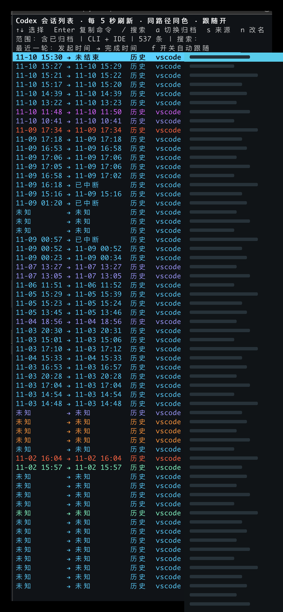

跨项目，找回上下文
浏览 CLI、IDE 的本地交互会话，按标题、目录或会话 ID 搜索。已归档记录也能找到。
一个常驻终端的 Codex 会话浏览器
找到昨天的对话，接上刚完成的任务。
在一个始终打开的列表里，浏览、搜索，继续工作。
codex-sessions --archived
列表保持打开。复制命令后，在另一个终端继续。
数据留在本机。不上传会话，不自动执行命令。
BUILT FOR YOUR TERMINAL
把散落在不同项目里的 Codex 会话，放回同一个视野。
浏览 CLI、IDE 的本地交互会话，按标题、目录或会话 ID 搜索。已归档记录也能找到。
用固定配色辨认工作目录，单行布局保留更多会话。选择之后，完整目录显示在底部。
并排显示发起与完成时间，底部展示精确时间和耗时。缺少结束记录时明确标为“未结束”。
执行开始或完成后，自动选中对应会话。每 5 秒检测一次，也可以随时关闭跟随，继续手动浏览。
按 n 或 F2 重命名，通过 Codex 官方接口保存会话名。搜索或改名输入期间，高亮暂不跳走。
Enter 复制带工作目录的 resume 命令。粘贴执行后继续对话，这边的列表依然留在原地。
STAY ON THE KEYBOARD
这里展示本机历史，不提供跨设备同步。“未归档”不等于正在运行；一轮执行完成，也不代表整个需求已经完成。旧记录缺少生命周期信息时，时间会显示为“未知”。
当前版本已在 Codex CLI 0.167.0 验证。更详细的数据读取方式和兼容性说明见 README。